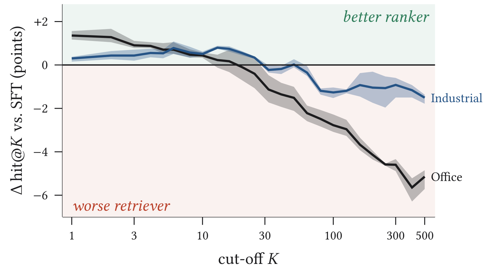
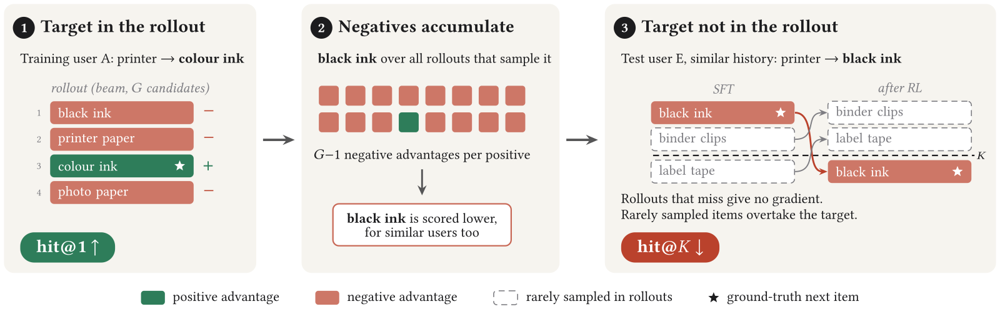
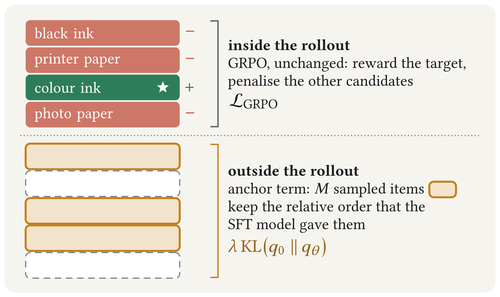
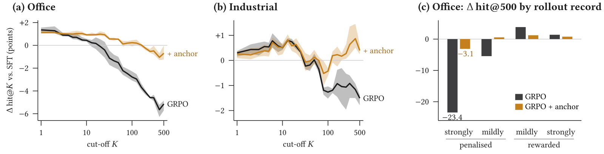
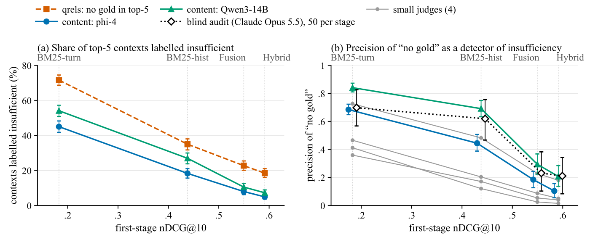
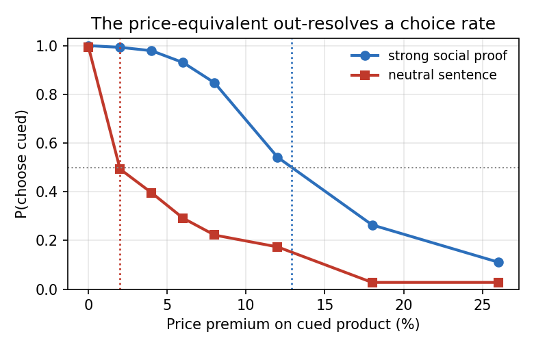

目录 · 7 节
1上线看几百个候选，汇报却停在前十2被挤出去的，是本来排在中间的货3走一遍：黑色墨水是怎么掉出候选的4理想目标不会掉召回，估出来的更新却会5滚动外锚定：约束滚动外锚点的相对分数6这对做生成式推荐后训练的人意味着什么7局限前十变准了，交给下游的五百个候选却在掉人：生成式推荐的强化学习后训练，和滚动外锚定
生成式推荐上线时，更常见的用法是先生成一批候选，交给后面的排序器或奖励模型接着排；也有系统把前几个结果直接亮给用户。有的检索系统一次交出 1,500 个，有的一次生成 512 个。对前一种用法，这条通道好不好，看的是用户真正会选的那一件还在不在这份名单里。
后训练几乎已经成了标配。先在记下的下一项上做监督微调，再用强化学习加一轮，最常见的算法是 GRPO。已有工作主要报告小 K、通常是前十的命中率和 NDCG。单看这些报告，深列表里的召回损失会被漏掉。
香港科技大学和 Trip.com Group 的研究者把同一份模型按完整商品目录精确排完，一直看到第 500 位。他们发现，强化学习会提高列表最前面的命中，却在所研究的全部五个数据集上降低候选列表的召回。作者把根因放在这里：每位用户通常只记下一件下一项，再加上滚动里的更新方式和共享参数。滚动里其余看起来最像的候选都被当成错误，受到负优势惩罚。这些候选又常常是相似用户真正会选的东西，于是从那些用户的候选里掉了出去。他们补上一项滚动外锚定，让模型对滚动之外另外采到的一批商品，靠近监督微调模型给出的相对分数，因而也靠近它们原来的顺序。五个数据集上，顶部指标还在，召回回到监督微调附近：四组达到或略高于监督微调水平，Office 仍留下一个小缺口。Office 这组办公用品数据上，前五百位命中率会从 52.84% 降到 47.69%，锚定能把丢掉的 5.1 个百分点里的 4.4 个捞回来。
在这篇测量的五个数据集上，强化学习会把生成式推荐变成更好的排序器、更差的检索器；滚动外锚定保住了顶部指标，并把召回拉回监督微调附近，但这篇还没有把下游排序器接到工业线上检验。
上线看几百个候选，汇报却停在前十
每件商品先被写成一串短的离散记号，叫 Semantic ID。模型像语言模型一样，按用户最近的购买历史，把下一项的编号“写”出来。监督微调只提高记下的那一件的概率，并不点名说谁是错的。强化学习则不同：策略先为这条历史生成一小群候选，论文把这群候选叫做滚动。和记下的下一项对上的，得到奖励；常见写法还会给没对上的候选打负分。
这篇沿用 MiniOneRec 里的 GRPO 配置。每次滚动抽出 16 个互不相同的候选。目标如果在这 16 个里，它拿正优势，其余 15 个拿负优势；如果目标根本没被抽到，整组优势都是零，这次就没有策略梯度。骨干是 Qwen2.5-1.5B-Instruct，全量微调。参考策略固定为监督微调检查点。
他们在五个数据集上做配对比较，每个强化学习配置跑三种子，取均值。Office 和 Industrial 是 MiniOneRec 发布的 2018 年亚马逊评论基准，分别有 3,459 和 3,686 件商品。Beauty、Toys、Sports 是 2014 年亚马逊 5-core 子集，目录更大，大约 1.2 万到 1.8 万件，强化学习超参没有为这三组单独调过。评估时，他们对每个测试提示给目录里每一件商品打分，记录目标的精确名次，再看 hit@K 和 NDCG@10。每个提示只有一个目标，所以这里的 hit@K 就是该截断处的召回。
一轮 GRPO 之后，前十确实更好看。四个数据集上，NDCG@10 和前十的命中都上升；Sports 上，前五的命中也上升。所以如果只验收最前面，会得出后训练成功的结论。
再往下看，曲线就翻到零轴下面。Office 大约从第 20 位开始变为损失，Industrial 大约从第 50 位开始。这说明调用深度稍微超过几十，账就已经翻过来了。
Office 上的具体数字把两端写得很清楚。NDCG@10 从 11.59% 升到 12.55%，前五十的命中从 25.73% 降到 24.22%，前五百的命中从 52.84% 降到 47.69%，所以顶部变准和候选变少是同时发生的。监督微调模型原先排进前五百的测试目标，有 22% 在强化学习之后不见了。五个数据集上，这个比例在 14% 到 22% 之间，说明掉出候选不是 Office 独有的。

这不是只在精确排名里才有的账。用宽度等于 K 的约束 beam 出候选，Office 的 hit@200 仍掉 2.59 个百分点，hit@500 掉 3.06 个百分点；Industrial 分别掉 1.96 和 1.83。所以按上线常用的 beam 出名单，中后段的损失还在。
可如果沿用常见协议，beam 宽度 50、只看前十，Office 和 Industrial 的 hit@10 还会显示上升 0.39 和 0.46 个百分点。这说明同一套模型，只看前十会报告收益，把召回的损失整个漏掉。
换一套强化学习配置，损失还在。参考策略在训练中跟着当前策略移动时，Office 的 hit@500 掉 6.4 个百分点，再训一轮掉到 8.9。换成带基线的 REINFORCE++，掉的召回是这笔 GRPO 的三到四倍。
被挤出去的，是本来排在中间的货
把测试提示按监督微调给出的目标名次分组，移动不发生在最前面，而发生在中间。Office 上，本来排第一的目标，中位数还是第一。排在第 2 到第 10 的，升和降大致打平，中位数从 4 走到 3。所以最顶部几乎没有被拆掉，这和前十变好看是对得上的。
真正往下掉的是第 11 位到第 500 位。Office 上，降档几乎是升档的两倍：第 11 到 50 的中位数从 26 落到 44，有 62% 被降；第 201 到 500 的中位数从 326 落到 497。这意味着监督微调认为“还算靠前、可以进候选”的目标，有不少被推出了常用的候选窗口。Industrial 上，这几档也有 54% 到 57% 被降，只是中位移动小一些。排在 500 名开外的目标反而略有改善。
强化学习伤害的，是监督微调认为“对这个用户挺合理、只是没放到最前”的那些商品。
这不是把分布削得更尖就能解释的。Office 上，物品分布的熵从 6.0 降到 3.1，确实更尖了。可名次类指标对分数的单调变换不变，只调温度、只把概率集中到头部，任何 K 的 hit@K 都不会变。要掉召回，必须出现新的名次颠倒：监督微调排对的一对商品，强化学习把它们排反了。
走一遍：黑色墨水是怎么掉出候选的
论文用一个示意例子把这件事串起来。下面按这个故事走，数字除了特别标明来自实验的，都是示意。
先从一条训练样本说起。这条记录里，用户的下一项是彩色墨水。模型给这条历史滚出 16 个候选，彩色墨水在里面，于是它拿正优势，黑色墨水等另外 15 个拿负优势。彩色墨水相对这些竞争者往上升，列表最前面更准了。
接下来看黑色墨水自己的账。它对很多用户都像“下一个可能买的东西”，所以一次次被采样，却很少自己当目标。惩罚在这件商品上攒下来。示意一下记账：若它在 16 次滚动里有 15 次只是别人的陪跑，账面上就是 15 个减号对 1 个加号。
再看共享参数会把这件事带到谁身上。模型参数是所有用户共用的。对一位历史相近、下一项其实就是黑色墨水的人，这件商品的分数也会被带下去。
如果这个人自己的滚动没抽到黑色墨水，这次更新就没有任何回推力。很少被抽到的商品分数没被压，反而可能超过它，把它挤出前 K 名。

第五步，把示意接回测量。作者在强化学习开始前，只用监督微调模型，给每个训练提示取出 16 个最高分候选，按商品把这些优势加总，叫做滚动记录。记录为负，表示训练尚未开始时，这件商品按这本账累计负优势已经超过累计正优势。作者用它来预先标出哪些测试目标更可能掉召回，而不是把它当成训练结束后实际降了多少分。Office 上，45% 的测试目标记录为负；Industrial 上是 34%。从未出现在这些候选里的测试目标只有 1.7%。
损失正好落在记录为负的目标上。在 Office、参考策略跟着当前策略移动的一次运行里，记录最负的那组测试用户，hit@500 掉了 27.4 个百分点；其余记录为负的组掉 9.0 个百分点；记录为正的组大约升 3 个百分点，顶部的收益也集中在最正的那一组。从未进入过训练滚动的少数目标，名次不降反升，Office 的 hit@500 升 9.6 个百分点。被惩罚的商品往下走，没被惩罚的商品就相对往上走。
这组数字说明，召回不是均匀变差，而是掉在“目标本身常被当成别人的负样本”的用户身上。
理想目标不会掉召回，估出来的更新却会
如果奖励真按“下一个是这件商品的概率”来给，再加一项对监督微调模型的 KL 约束，精确优化后的策略不该在任何 K 上降低期望命中。作者给出一个命题：只有当一件商品的真实下一个概率更高时，它才会挤进前 K，挤出去的那件概率更低，所以前 K 的概率之和不会下降。
他们实际看到的，是新的名次颠倒。偏离来自三处。奖励不是真实概率，而是一条记下的下一项。更新只碰到滚动里那 16 个候选。一个网络还要服务所有用户。
先看负优势本身。他们在其他设置不变时，分别把两种符号的优势置零。只留下正优势，Office 和 Industrial 的召回损失都消失，Office 的 hit@500 还升了 1.23 个百分点，但顶部收益也不再显著。只留下负优势，hit@500 掉 19 到 21 个百分点，Office 上大约是原损失的三倍，Industrial 上超过十倍。负优势对损失既必要，单独也足以造成大得多的损失。顶部收益同样需要它们，因为目标是靠压低身旁的竞争者升上去的。
再看惩罚落在谁身上。DPO 没有滚动，也没有组内归一化和“未抽中就不更新”的闸门，它只是拿目标对上一个负样本。负样本若来自监督微调模型为这条提示给出的 beam，Office 的 hit@500 掉 4.1 个百分点，顶部也没有收益。负样本若从目录里均匀随机抽，hit@500 基本不变，只升 0.3 个百分点，损失只残留在中间截断，最多 2.2 个百分点。大 K 上的伤害，来自惩罚模型自己觉得最像的那些候选，并不只属于 GRPO。
最后是那道闸门。强化学习开始时，Office 和 Industrial 大约只有四成训练提示能在滚动里抽到目标，另外三个数据集更低，只有 11% 到 24%。其余提示的策略梯度是静音的。如果它们的目标已经被其他提示的更新带下去，自己这一步补不回来。
假如每个用户历史都有一张独立的分数表，一步更新只会改这条历史里被抽到的那几个候选，滚动外的相对顺序不会动，滚动外的目标也不该被直接压低。推荐模型之所以有用，正是因为它会在用户之间泛化。同一套 Semantic ID 和同一组参数，也把惩罚从抽到黑色墨水的人，带到历史相近、下一项就是黑色墨水的人身上。
这件事在推理任务里不那么刺眼。那边一个抽到的错误答案就是错的，也很少会是相似题目的正确答案，而且通常只用第一名。推荐这边，一条历史可以对应好几件合理的下一项，日志却只记下其中一件；所有人还从同一份不太大的封闭目录里选；检索通道会用到大约一千名以内的名单。于是，“推开 hard negatives” 在最前面加了分，在候选列表里减了分。
滚动外锚定：约束滚动外锚点的相对分数
诊断已经指到位置：伤害发生在滚动之外，发生在那些自己的滚动里没有这件商品、因而没有回推梯度的用户身上。GRPO 自带的 KL 项也救不了，因为它同样只在滚动上估计，约束的还是模型最靠前的那一批候选。
滚动外锚定是在原有的 GRPO 损失之外再加一项。滚动里面，GRPO 这一项原样保留。另外，从滚动外面再采 M 件商品。这里的商品分数，是模型按顺序生成该商品三个 Semantic ID 时，把每步的对数概率加起来。用冻结的监督微调模型和当前策略，在这 M 件上对分数取指数再归一化，得到两套概率。损失是从监督微调这套概率到当前模型这套概率的 KL。这项为零，当且仅当这组锚点上的两套概率相同。对分数取指数再归一化时，一起加同一个常数不会改变概率，所以这时比的是分数差，不是绝对高低；分数差一致，顺序也就一致。示意一下：监督微调给两件锚点打 2 分和 0 分，当前模型打 5 分和 3 分，分差同为 2，两套概率相同，损失为零；若当前模型打成 2 分和 1 分，顺序没变，分差变了，概率也就变了，仍会受罚。所有实验里 M 取 16，这项权重取 0.1。锚点不是从目录里随便抽的：一半与某个滚动候选共享 Semantic ID 的前两个 code，一半共享第一个 code。物品内容相近时，前导 code 本来就相同。这个邻域在 Office 和 Industrial 的测试集上只占目录的 12% 和 11%，却覆盖了监督微调排在第 17 到 500 位的目标里的 44% 和 57%。中间名次正是 GRPO 最常往下推的区间。 Hoot 说
正文已经用彩色墨水和黑色墨水走过召回为何下降。这里换两件滚动外锚点 A、B，用同一组示意分数看这项修补到底约束什么。监督微调给 A、B 打 2 分和 0 分；当前模型打成 5 分和 3 分，或打成 2 分和 1 分。下面的概率都由这两套分数取指数再归一化得到。
固定三条 SID 的对数概率之和 → 只在锚点上取指数再归一化 → 损失只看分差 → 未进锚点的商品仍可越过它们 → 共享参数不保证惩罚只留在某些历史上
- 固定的三条 SID → 商品分数锚点一经选定，两边都沿着该商品已经固定的三个 Semantic ID 逐步取对数概率，再加总成分数。模型并不重新生成另一件商品。分数 = 三个条件对数概率之和
- 分数差不变 → 两套概率相同 → 损失为零示意：监督微调是 2 和 0，当前模型是 5 和 3，分差同为 2。两边取指数再归一化后，概率都是 0.88 和 0.12，这项损失为零。5-3=2，与 2-0 相同；概率同为 0.88 和 0.12
- 分差变了 → 概率变了 → 仍受罚若当前模型打成 2 和 1，顺序没变，分差从 2 变成 1。概率变成 0.73 和 0.27，与监督微调不再相同，损失仍会加上。2-1=1；概率变成 0.73 和 0.27
- 未进锚点的商品 C → 全目录名次仍可越过 A、B这项约束只作用在抽中的锚点之间，所以未进这组锚点的商品 C 仍可能在完整目录排名里越过 A 和 B。保住分差，不等于冻结绝对名次。约束范围 = 抽中的锚点，不是整份目录
- 共享参数上的新梯度 → 不保证惩罚只留在某些历史上参数是共用的，所以这项新梯度也可能碰到滚动里的商品。把惩罚更多地留在抽到该商品的那些历史附近，是同时靠近两项损失的一种做法，不是这项约束本身保证的结果。分差约束 ≠ 惩罚范围的保证
所以滚动外锚定管的是抽中锚点上的相对分数。它能把召回拉回来，并不等于把每件商品钉在监督微调给出的全目录位置上。

出处
论文 §5.1–5.2：商品分数是三个 Semantic ID 的条件对数概率之和；在 M 件滚动外锚点上对分数取指数再归一化，损失为 KL(q0||qθ)；一起加同一常数不改变该项。文中 2、0、5、3、1 与 0.88、0.12、0.73、0.27 为示意。
这项约束有几个直白的性质。训练刚从监督微调出发时，它是零，不挡起步。锚点上的分数如果一起加同一个常数，损失不变，所以它并不反对把概率从尾部整体移到头部，惩罚的是这组锚点彼此分数差的变化。每个提示它都起作用，包括那些滚动没抽中目标、GRPO 没有策略梯度的多数样本。同一件黑色墨水，在某些用户的滚动里仍会被 GRPO 压低；在另一些用户那里，如果它被抽作滚动外的锚点，它和同一组其他锚点的分数差会被拉回监督微调给出的样子，它在全目录里的绝对名次仍可以变。参数是共享的，所以这项新梯度也可能碰到滚动里那些商品的分数。要同时靠近这两头，模型就得把惩罚更多地留在抽到这件商品的那些历史附近，而不是让它在相似用户身上一起塌下去。
效果跟诊断对齐。K=50 时，加了锚定的模型在五个数据集上都是三者里 hit@K 最高的。这说明召回的挽回并不是拖到很深的名单才出现，损失从哪里开始，修复也从哪里开始。
Office 上，从 50 到 500，hit@K 提高 2.1 到 4.4 个百分点，每个种子都显著。前五百命中回到 52.14%，相对 GRPO 的 47.69% 和监督微调的 52.84%，等于把丢掉的 5.1 个百分点里的 4.4 个捞了回来。所以顶部附近的名单被补回了，只剩一个很小的缺口。
Industrial 上，这一项从 K=100 的 0.8 个百分点增到 K=500 的 1.9 个百分点，每个种子都显著，而且从第 200 位起已经超过监督微调。Beauty、Toys、Sports 上，GRPO 本来掉得少，锚定在 K≥100 仍加上 0.3 到 1.2 个百分点，hit@500 略高于监督微调。这意味着目录更大、原本掉得不多的三组数据上，锚定也没有把召回修过头修坏。
顶部指标总体保持，五个数据集、每个种子上都没有观察到 NDCG@10 相对 GRPO 显著下降。前十的命中也不低于 GRPO，Office、Beauty、Sports 上还高 0.2 到 0.5 个百分点。作者估计，这是因为有些被 GRPO 推出前十的目标也被拉了回来。
| 数据 | 模型 | NDCG@10 | hit@10 | hit@50 | hit@500 |
|---|---|---|---|---|---|
| Office | 监督微调 | 11.59 | 15.97 | 25.73 | 52.84 |
| Office | GRPO | 12.55 | 16.41 | 24.22 | 47.69 |
| Office | GRPO + 锚定 | 12.64 | 16.89 | 26.27 | 52.14 |
| Industrial | 监督微调 | 9.05 | 13.19 | 23.21 | 53.23 |
| Industrial | GRPO | 9.48 | 13.70 | 23.23 | 51.72 |
| Industrial | GRPO + 锚定 | 9.42 | 13.71 | 23.33 | 53.63 |
（数字来自论文表 5，三种子均值，单位是百分数）

召回是从掉下去的地方回来的。在默认配置的一次运行里，Office 上滚动记录最负的那组用户，hit@500 在 GRPO 下掉 23.4 个百分点，加上锚定后只掉 3.1 个百分点，相对 GRPO 挽回大约 20 个百分点。这说明被惩罚最重的那些目标，正是锚定主要拉回来的人。记录最正、顶部收益主要发生在那里的那组，大部分收益还在。
监督微调排进前五百的测试目标，GRPO 会丢掉 14% 到 22%，加上锚定后降到 5% 到 8%。所以候选名单里少掉的，主要是原来已经进入检索窗口的那些目标。
换一套强化学习底座，锚定同样把召回拉了回来。参考策略同步移动时，加上锚定，Office 的 hit@500 从 46.40% 回到 52.28%，说明它不是只对默认的固定参考有效。REINFORCE++ 原来掉得更狠，加上锚定后，Office 的 hit@500 从 37.92% 回到 51.17%，Industrial 从 46.94% 回到 52.42%，NDCG@10 还显著上升。在这里列出的配置中，原先损失更大的配置，补回的百分点也更多。
这对做生成式推荐后训练的人意味着什么
后训练的验收，要看到模型真正交出去的深度，而不是只看前十。
如果你把生成式推荐当成检索通道，就把 hit@K 量到交给下游排序器的那个 K，至少看到几十、几百。只拿 beam 50、看前十，会把这笔召回账漏掉。损失可以在强化学习开始前先诊断：用监督微调模型算一版滚动记录，记录为负的目标，往往就是后来掉得最狠的那些。
若后训练仍在 beam 滚出的合理候选上打负优势，加一项滚动外锚定是这篇给出的直接补法。它保留原来的 GRPO 损失项，另加一项去约束滚动外锚点的相对分数；在他们试过的配置里都能把召回拉回来。更根本的改法在奖励：承认一条历史可以对应好几件可接受的下一项，例如相似用户的选择，从一开始就不要把这些候选当成错误。
局限
五个数据集的目录相对较小，Office 只有 3,459 件商品，最大的 Sports 也只有 18,357 件，和工业目录不是一个量级。骨干是 1.5B 的模型，主要实验只训一轮。Beauty、Toys、Sports 还沿用了在 Office、Industrial 上设定的超参，作者自己说那里的强化学习大概没有处在最佳状态。测量是完整目录上的精确排名，没有把下游排序器接到回路里，也没有工业规模的线上对照。锚定能把召回拉回监督微调附近，但滚动外的目标仍然没有强化学习自己的学习信号。
读完这篇，你觉得
夜读鸮记下了，谢谢你的反馈。
点一下即可，无需登录；再点一次撤回。只统计匿名次数，不记录你是谁。
相关论文RELATED

Retrieval · 2026-11-03Better Retrievers, Worse Labels: How Incomplete Relevance Judgments Distort Abstention Evaluation in Conversational RAG对话式 RAG 评测里，判断检索内容够不够回答常走一条捷径：检索结果里没有标注过的相关文档，就算答不了，模型这时拒答算对。作者在 RECOR 上换了四个检索器重跑，发现检索器越强，这条捷径越不准：没有标注文档、其实却含有答案的上下文，从 28% 升到 72%。原因是相关性标注不全，强检索器常常找到没被标过的有用文档。用这条捷径打分，会奖励本该回答却拒答的模型。评测拒答时应该看检索内容本身，而不是看有没有命中标注文档。 Generative · 2026-11-10Rethinking Latent Reasoning for Generative Recommendation: Beyond Teacher-Generated CoT and Recurrent Hidden-State Feedback生成式推荐若要在中间做潜在推理，通常得先让老师模型写出思维链，成本高，也不容易稳定。这篇论文不再生成老师轨迹，而是先用固定的稀疏编码器把历史商品描述编成可缓存的词汇特征，再把同一用户见过的商品特征汇总成一个多热语义目标；训练时用浅层线性头，让插在历史和目标商品编码之间的推理 token 的隐状态去预测这个目标。这些目标只依赖历史上见过的商品，不会偷看下一个要预测的物品。只做监督微调时，方法在四个推荐基准上超过所比较的基线；在 Beauty 上，相对 MiniOneRec，NDCG@1 提高了 20.6%，NDCG@5 提高了 10.3%。对照实验表明，增益来自与输入对齐的历史语义监督，而不是多出来的 token 本身。
Generative · 2026-11-10Rethinking Latent Reasoning for Generative Recommendation: Beyond Teacher-Generated CoT and Recurrent Hidden-State Feedback生成式推荐若要在中间做潜在推理，通常得先让老师模型写出思维链，成本高，也不容易稳定。这篇论文不再生成老师轨迹，而是先用固定的稀疏编码器把历史商品描述编成可缓存的词汇特征，再把同一用户见过的商品特征汇总成一个多热语义目标；训练时用浅层线性头，让插在历史和目标商品编码之间的推理 token 的隐状态去预测这个目标。这些目标只依赖历史上见过的商品，不会偷看下一个要预测的物品。只做监督微调时，方法在四个推荐基准上超过所比较的基线；在 Beauty 上，相对 MiniOneRec，NDCG@1 提高了 20.6%，NDCG@5 提高了 10.3%。对照实验表明，增益来自与输入对齐的历史语义监督，而不是多出来的 token 本身。
Generative · 2026-10-25A Cue's Hidden Price: Auditing Seller Influence on AI Shoppers两款耳机价格、星级、参数完全一样，只有一款多了一句「我们最畅销的型号，超过 10,000 名顾客选择」。在六对这样的耳机上让 GPT-4o 挑，144 次里它全挑了带这句话的那款。把这款慢慢涨价，要贵出约 13% 它才开始犹豫。换成一句平淡的商品介绍，只要贵 2% 左右就没了优势。两句话看选中率一模一样，换算成钱却差了六倍。作者想用这个办法，给卖家写的每一句话标个价。
讨论
欢迎补充实验细节、复现经验或不同看法。需 GitHub 登录。
正在加载讨论…